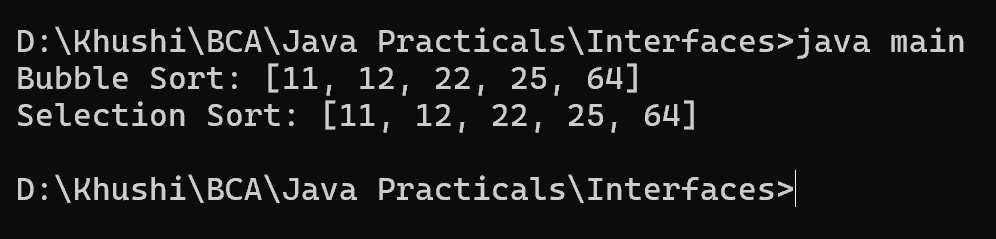

7. Write a Java program to create an interface Sortable with a method sort() that sorts an array of integers in ascending order. Create two classes BubbleSort and SelectionSort that implement the Sortable interface and provide their own implementations of the sort() method.
interface Sortable {
void sort(int[] array);
}
class BubbleSort implements Sortable {
@Override
public void sort(int[] array) {
int n = array.length;
for (int i = 0; i < n - 1; i++) {
for (int j = 0; j < n - 1 - i; j++) {
if (array[j] > array[j + 1]) {
int temp = array[j];
array[j] = array[j + 1];
array[j + 1] = temp;
}
}
}
}
}
class SelectionSort implements Sortable {
@Override
public void sort(int[] array) {
int n = array.length;
for (int i = 0; i < n - 1; i++) {
int minIndex = i;
for (int j = i + 1; j < n; j++) {
if (array[j] < array[minIndex]) {
minIndex = j;
}
}
int temp = array[minIndex];
array[minIndex] = array[i];
array[i] = temp;
}
}
}
class main {
public static void main(String[] args) {
int[] array = {64, 25, 12, 22, 11};
Sortable bubbleSort = new BubbleSort();
bubbleSort.sort(array);
System.out.println("Bubble Sort: " + Arrays.toString(array));
array = new int[]{64, 25, 12, 22, 11};
Sortable selectionSort = new SelectionSort();
selectionSort.sort(array);
System.out.println("Selection Sort: " + Arrays.toString(array));
}
}
